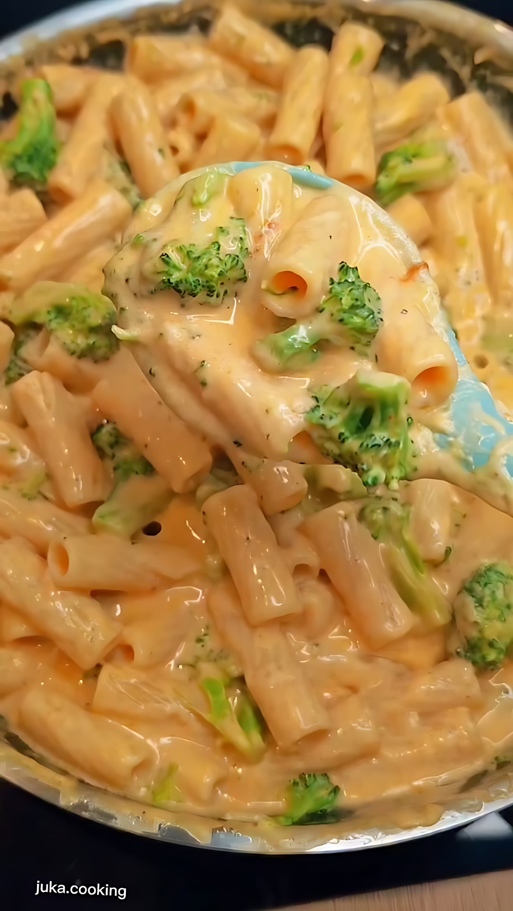

Diese cremige Brokkoli-Käse-Pasta ist echtes Soulfood
In nur 15 Minuten zauberst du dir ein unglaublich cremiges Nudelgericht, das die ganze Familie lieben wird. Viel geschmolzener Käse, eine herrlich sahnige Sauce und knackiger Brokkoli – einfacher geht Genuss kaum! Und das Beste: Du brauchst nur wenige Zutaten.
- ca. 15 Min.
- 10 Zutaten
- 7 Schritte
Zur Zubereitung Video ansehen ↗
Zutaten
Zubereitung
- Nudeln in Salzwasser etwa 10 Minuten kochen.
- Brokkoli in kleine Röschen teilen und die letzten 3 Minuten mit ins Nudelwasser geben.
- Butter in einer Pfanne schmelzen, Mehl einrühren und kurz anschwitzen.
- Knoblauch hinzufügen. Milch und Kochsahne nach und nach einrühren.
- Mit Salz, Pfeffer und Paprikapulver abschmecken.
- Geriebenen Käse und Cheddar dazugeben und schmelzen lassen, bis eine wunderbar cremige Käsesauce entsteht.
- Nudeln und Brokkoli unterheben und alles gut vermengen.